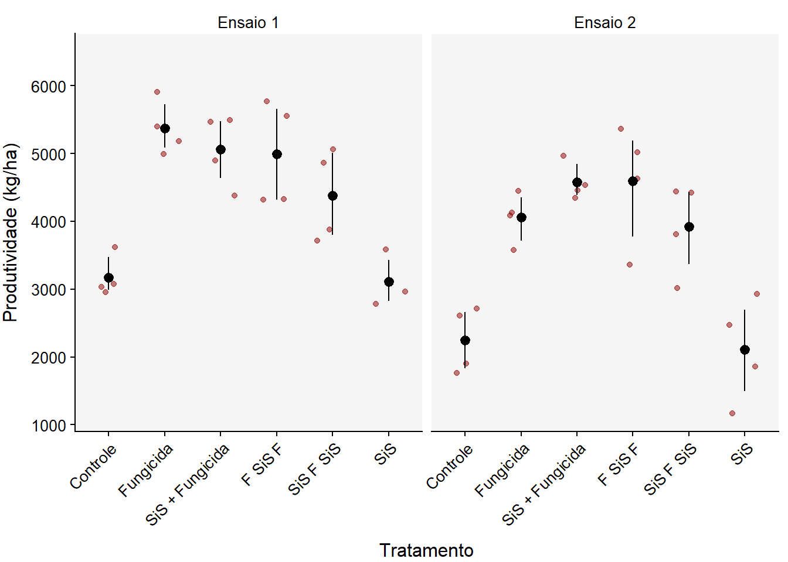

library(gsheet)
library(tidyverse)
library(r4pde)
library(DT)
library(patchwork)
library(performance)
library(DHARMa)
library(emmeans)
library(multcomp)
library(multcompView)
library(car)
library(kableExtra)Parâmetros de Produção
Carregando os pacotes
Importanto os dados - Parâmetros de Produção (PP)
Os dados utilizados nesta análise serão importados de uma planilha google sheet. Após importação, algumas colunas de dados serão transformados para fatores. O intuito é facilitar o desenvolvimento das análises.
PP <- gsheet2tbl("https://docs.google.com/spreadsheets/d/1t1oOnimLXdx6rqtDiYg6wNXB2byY8_Z-/edit#gid=1418573798")
PP <- PP %>%
mutate(EXPERIMENTO = as.factor(EXPERIMENTO),
TRATAMENTO = as.factor(TRATAMENTO),
BLOCO = as.factor(BLOCO))
head(PP)# A tibble: 6 × 5
EXPERIMENTO TRATAMENTO BLOCO PESO_DE_MIL_GRAOS PRODUTIVIDADE
<fct> <fct> <fct> <dbl> <dbl>
1 1 1 1 125. 3071.
2 1 1 2 127. 3031.
3 1 1 3 137. 3621.
4 1 1 4 135. 2957.
5 1 2 1 197. 5907.
6 1 2 2 192. 5402.Peso de Mil Grãos (PMG)
Visualização gráfica
theme_set(theme_r4pde(font_size = 12))
PP %>%
ggplot(aes(TRATAMENTO, PESO_DE_MIL_GRAOS))+
geom_jitter(width = 0.3, alpha = 0.5, colour = "darkred")+
stat_summary(fun.data = "mean_cl_boot", color = "black")+
labs(x = "Tratamento",
y = "Peso de Mil Grãos (g)")+
theme(axis.title.y = element_text(vjust = +3),
axis.title.x = element_text(vjust = -1),
axis.text.x = element_text(angle = 45, hjust = 1))+
scale_x_discrete(labels = c("1" = "Controle", "2" = "Fungicida", "3" = "SiS + Fungicida", "4" = "F SiS F", "5" = "SiS F SiS", "6" = "SiS"))+
facet_wrap(~ EXPERIMENTO, labeller = labeller(EXPERIMENTO =
c("1" = "Ensaio 1",
"2" = "Ensaio 2")))Modelo para análise em fatorial
Para definir se é possível ou não realizar a análise da varíavel PESO_DE_MIL_GRAOS combinando os resultados dos ensaios, será feita uma análise de variância (ANOVA) considerando o experimento (ensaio) como um fator.
PMG <- lm(PESO_DE_MIL_GRAOS ~ TRATAMENTO*EXPERIMENTO + BLOCO,
data = PP)anova(PMG)Analysis of Variance Table
Response: PESO_DE_MIL_GRAOS
Df Sum Sq Mean Sq F value Pr(>F)
TRATAMENTO 5 20035.3 4007.1 52.2170 1.007e-14 ***
EXPERIMENTO 1 26119.3 26119.3 340.3677 < 2.2e-16 ***
BLOCO 3 21.1 7.0 0.0915 0.964210
TRATAMENTO:EXPERIMENTO 5 2052.1 410.4 5.3482 0.001043 **
Residuals 33 2532.4 76.7
---
Signif. codes: 0 '***' 0.001 '**' 0.01 '*' 0.05 '.' 0.1 ' ' 1Pela análise de variância, considerando o experimento (ensaio) como um fator, observamos que há interação entre fatores (TRATAMENTO:EXPERIMENTO, valor de probabilidade < 0.05), logo não será possível analisar o peso de mil grãos em conjunto, sendo necessário avaliação dos experimentos individualmente.
Modelo para análise - PMG, experimento 1
PMG_E1 <- PP %>%
dplyr::select(EXPERIMENTO, TRATAMENTO, BLOCO, PESO_DE_MIL_GRAOS) %>%
filter(EXPERIMENTO == 1)PMG_1 <- lm(PESO_DE_MIL_GRAOS ~ TRATAMENTO + BLOCO,
data = PMG_E1)Avaliação das premissas
check_normality(PMG_1)OK: residuals appear as normally distributed (p = 0.429).check_heteroscedasticity(PMG_1)OK: Error variance appears to be homoscedastic (p = 0.245).plot(simulateResiduals(PMG_1))Apesar dos resultados obtidos pela avaliação do pacote DHARMa apontarem desvios em relação a homogeneidade das variâncias, os testes realizados pelo pacote performance demonstram homogeneidade e homocedasticidade. Assim, decidimos prosseguir com as análises.
ANOVA
anova(PMG_1)Analysis of Variance Table
Response: PESO_DE_MIL_GRAOS
Df Sum Sq Mean Sq F value Pr(>F)
TRATAMENTO 5 16984.3 3396.9 54.6692 4.262e-09 ***
BLOCO 3 71.9 24.0 0.3858 0.7648
Residuals 15 932.0 62.1
---
Signif. codes: 0 '***' 0.001 '**' 0.01 '*' 0.05 '.' 0.1 ' ' 1Comparação de médias
medias_PMG_1 <- emmeans(PMG_1, ~ TRATAMENTO)cld(medias_PMG_1,
Letters = LETTERS) TRATAMENTO emmean SE df lower.CL upper.CL .group
1 131 3.94 15 123 139 A
6 131 3.94 15 123 140 A
5 164 3.94 15 156 173 B
3 187 3.94 15 178 195 C
2 192 3.94 15 184 201 C
4 193 3.94 15 184 201 C
Results are averaged over the levels of: BLOCO
Confidence level used: 0.95
P value adjustment: tukey method for comparing a family of 6 estimates
significance level used: alpha = 0.05
NOTE: If two or more means share the same grouping symbol,
then we cannot show them to be different.
But we also did not show them to be the same. Coeficiente de Variação (CV)
CV_PMG1 <- agricolae::cv.model(PMG_1) %>%
round(digits = 2)
CV_PMG1[1] 4.74Modelo para análise - PMG, experimento 2
PMG_E2 <- PP %>%
dplyr::select(EXPERIMENTO, TRATAMENTO, BLOCO, PESO_DE_MIL_GRAOS) %>%
filter(EXPERIMENTO == 2)PMG_2 <- lm(PESO_DE_MIL_GRAOS ~ TRATAMENTO + BLOCO,
data = PMG_E2)Avaliação das premissas
check_normality(PMG_2) OK: residuals appear as normally distributed (p = 0.630).check_heteroscedasticity(PMG_2)OK: Error variance appears to be homoscedastic (p = 0.164).plot(simulateResiduals(PMG_2))Pelos resultados obtidos para as análises de normalidade e homocedasticidade, observamos que os dados atendem às pressuposições da ANOVA. Portanto, não serão necessárias transformações. Assim, podemos prosseguir a análise.
ANOVA
anova(PMG_2)Analysis of Variance Table
Response: PESO_DE_MIL_GRAOS
Df Sum Sq Mean Sq F value Pr(>F)
TRATAMENTO 5 5103.1 1020.62 11.1763 0.0001248 ***
BLOCO 3 179.7 59.90 0.6559 0.5916530
Residuals 15 1369.8 91.32
---
Signif. codes: 0 '***' 0.001 '**' 0.01 '*' 0.05 '.' 0.1 ' ' 1Comparação de médias
medias_PMG_2 <- emmeans(PMG_2, ~ TRATAMENTO)cld(medias_PMG_2,
Letters = LETTERS) TRATAMENTO emmean SE df lower.CL upper.CL .group
6 97.9 4.78 15 87.8 108 A
1 100.8 4.78 15 90.6 111 A
5 125.8 4.78 15 115.6 136 B
4 129.2 4.78 15 119.0 139 B
3 132.1 4.78 15 121.9 142 B
2 132.6 4.78 15 122.4 143 B
Results are averaged over the levels of: BLOCO
Confidence level used: 0.95
P value adjustment: tukey method for comparing a family of 6 estimates
significance level used: alpha = 0.05
NOTE: If two or more means share the same grouping symbol,
then we cannot show them to be different.
But we also did not show them to be the same. Coeficiente de Variação (CV)
CV_PMG2 <- agricolae::cv.model(PMG_2) %>%
round(digits = 2)
CV_PMG2[1] 7.98Tabela de PESO_DE_MIL_GRAOS
cld_PMG1 <- cld(medias_PMG_1,
Letters = LETTERS)
cld_PMG2 <- cld(medias_PMG_2,
Letters = LETTERS)
table_PMG_1 <- cld_PMG1 %>%
dplyr::select(TRATAMENTO, emmean, .group) %>%
dplyr::arrange(TRATAMENTO) %>%
mutate(emmean = round(emmean, 2)) %>%
mutate(TRATAMENTO = (c("Controle", "Fungicida", "SiS + Fungicida", "F SiS F", "SiS F SiS", "SiS")))
table_PMG_2 <- cld_PMG2 %>%
dplyr::select(TRATAMENTO, emmean, .group)%>%
dplyr::arrange(TRATAMENTO) %>%
dplyr::mutate(TRATAMENTO = NULL) %>%
mutate(emmean = round(emmean, 2))
linha_CV_PMG <- c('CV',CV_PMG1,' ',CV_PMG2,' ')
combined_table_pmg <- cbind(table_PMG_1, table_PMG_2)
combined_table_pmg2 <- rbind(combined_table_pmg, linha_CV_PMG)
colnames(combined_table_pmg2) <- c('Tratamento', 'Média', 'Grupo', 'Média', 'Grupo')
opts <- options (knitr.kable.NA = "CV (%)")
knitr::kable(
combined_table_pmg2,
align = "ccccc",
row.names=FALSE,
booktabs = TRUE, valign = 't') %>%
add_header_above(c(" "= 1, "Ensaio 1" = 2, "Ensaio 2" = 2)) %>%
add_header_above(c("Peso de Mil Grãos (g)" = 5))| Tratamento | Média | Grupo | Média | Grupo |
|---|---|---|---|---|
| Controle | 131.01 | A | 100.81 | A |
| Fungicida | 192.34 | C | 132.59 | B |
| SiS + Fungicida | 186.57 | C | 132.05 | B |
| F SiS F | 192.61 | C | 129.15 | B |
| SiS F SiS | 164.35 | B | 125.83 | B |
| SiS | 131.43 | A | 97.95 | A |
| CV | 4.74 | 7.98 |
Produtividade (PROD)
Visualização gráfica
PP %>%
ggplot(aes(TRATAMENTO, PRODUTIVIDADE))+
geom_jitter(width = 0.3, alpha = 0.5, colour = "darkred")+
stat_summary(fun.data = "mean_cl_boot", color = "black")+
labs (x = "Tratamento",
y = "Produtividade (kg/ha)")+
lims (y = c(NA, 6500))+
theme(axis.title.y = element_text(vjust = +3),
axis.title.x = element_text(vjust = -1),
axis.text.x = element_text(angle = 45, hjust = 1))+
scale_x_discrete(labels = c("1" = "Controle", "2" = "Fungicida", "3" = "SiS + Fungicida", "4" = "F SiS F", "5" = "SiS F SiS", "6" = "SiS"))+
facet_wrap(~ EXPERIMENTO, labeller = labeller(EXPERIMENTO =
c("1" = "Ensaio 1",
"2" = "Ensaio 2")))
Modelo para análise em fatorial
Para definir se é possível ou não realizar a análise da varíavel SEVERIDADE_FINAL combinando os resultados dos ensaios, será feita uma análise de variância (ANOVA) considerando o experimento (ensaio) como um fator.
PROD <- lm(PRODUTIVIDADE ~ TRATAMENTO*EXPERIMENTO + BLOCO,
data = PP)ANOVA - Fatorial
anova(PROD)Analysis of Variance Table
Response: PRODUTIVIDADE
Df Sum Sq Mean Sq F value Pr(>F)
TRATAMENTO 5 43370755 8674151 24.4007 3.303e-10 ***
EXPERIMENTO 1 7007263 7007263 19.7117 9.510e-05 ***
BLOCO 3 104945 34982 0.0984 0.9603
TRATAMENTO:EXPERIMENTO 5 1383210 276642 0.7782 0.5725
Residuals 33 11731099 355488
---
Signif. codes: 0 '***' 0.001 '**' 0.01 '*' 0.05 '.' 0.1 ' ' 1#Teste de Levene para avaliar igualdade de variância entre grupos - para confirmar homogeneidade#
leveneTest(PRODUTIVIDADE ~ EXPERIMENTO, PP)Levene's Test for Homogeneity of Variance (center = median)
Df F value Pr(>F)
group 1 0.2414 0.6255
46 Pela ANOVA, observa-se que não há interação entre os fatores tratamento e experimento (TRATAMENTO:EXPERIMENTO, valor de probabilidade = 0.572), ou seja a variância entre ensaios é a mesmo (o que é confirmado pelo teste de Levene, valor de probabilidade = 0.625). Assim, os dados dos ensaios podem ser combinados como repetições.
Modelo para análise combinada
PROD_B <- lm(PRODUTIVIDADE ~ TRATAMENTO + BLOCO,
data = PP)Avaliação das premissas
check_normality(PROD_B)OK: residuals appear as normally distributed (p = 0.568).check_heteroscedasticity(PROD_B)OK: Error variance appears to be homoscedastic (p = 0.965).plot(simulateResiduals(PROD_B))Pelos resultados obtidos para as análises de normalidade e homocedasticidade, observamos que os dados atendem às pressuposições da ANOVA, com isso podemos prosseguir.
ANOVA
anova(PROD_B)Analysis of Variance Table
Response: PRODUTIVIDADE
Df Sum Sq Mean Sq F value Pr(>F)
TRATAMENTO 5 43370755 8674151 16.8124 7.701e-09 ***
BLOCO 3 104945 34982 0.0678 0.9767
Residuals 39 20121572 515938
---
Signif. codes: 0 '***' 0.001 '**' 0.01 '*' 0.05 '.' 0.1 ' ' 1Comparação de médias
medias_PROD_B <- emmeans(PROD_B, ~ TRATAMENTO)cld(medias_PROD_B,
Letters = LETTERS) TRATAMENTO emmean SE df lower.CL upper.CL .group
6 2610 254 39 2096 3124 A
1 2708 254 39 2194 3222 A
5 4150 254 39 3636 4663 B
2 4715 254 39 4201 5228 B
4 4791 254 39 4277 5305 B
3 4817 254 39 4304 5331 B
Results are averaged over the levels of: BLOCO
Confidence level used: 0.95
P value adjustment: tukey method for comparing a family of 6 estimates
significance level used: alpha = 0.05
NOTE: If two or more means share the same grouping symbol,
then we cannot show them to be different.
But we also did not show them to be the same. Coeficiente de Variação (CV)
CV_prod <- agricolae::cv.model(PROD_B) %>%
round(digits = 2)
CV_prod[1] 18.12Tabela de PRODUTIVIDADE
cld_PROD <- cld(medias_PROD_B,
Letters = LETTERS)
table_PROD <- cld_PROD %>%
dplyr::select(TRATAMENTO, emmean, .group) %>%
dplyr::arrange(TRATAMENTO) %>%
mutate(emmean = round(emmean, 2)) %>%
mutate(TRATAMENTO = (c("Controle", "Fungicida", "SiS + Fungicida", "F SiS F", "SiS F SiS", "SiS")))
linha_CV_prod <- c('CV (%)',CV_prod,' ')
combined_table_prod <- rbind(table_PROD, linha_CV_prod)
colnames(combined_table_prod) <- c('Tratamento', 'Média', 'Grupo')
opts <- options(knitr.kable.NA = "CV (%)")
knitr::kable(
combined_table_prod,
align = "ccc",
row.names = FALSE,
booktabs = TRUE, valign = 't') %>%
add_header_above(c("Produtividade (kg/ha)" = 3))| Tratamento | Média | Grupo |
|---|---|---|
| Controle | 2707.94 | A |
| Fungicida | 4714.53 | B |
| SiS + Fungicida | 4817.5 | B |
| F SiS F | 4790.93 | B |
| SiS F SiS | 4149.68 | B |
| SiS | 2609.89 | A |
| CV (%) | 18.12 |